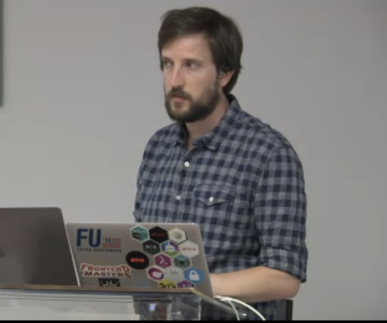

A Complete Intro to React
There are two versions of this workshop.
If you are here from Frontend Masters, you need to choose the one that corresponds to the video you're watching. Here's a guide based on what I look like:
|
Day One |
Day Two |
| v1 |
 |
 |
| v2 |
 |
 |
Notice during the first day you can see the light-up Apple logo on my laptop whereas on the second time it was covered by a Netflix logo. If you can see the light-up album, follow the v1 version of the course. If you cannot see it, follow the v2 version.
Otherwise, if you're not here from Frontend Masters and just want to follow the workshop materials, you probably want the v2 version; it's more updated with the latest tech. Below is the full break down of what they both cover.
|
v1 |
v2 |
| React Version |
v0.14.7 |
v15.3.2 |
| Redux |
Sync Actions |
Sync Actions and Async Thunks |
| Webpack |
v1 w/ code splitting |
v2 w/ code splitting, loading CSS, tree shaking, and production builds |
| React-Router |
v2 |
v4 |
| Testing |
Mocha, Chai, Sinon, Enzyme, and nyc |
Jest w/ istanbul, snapshot testing, Enzyme, and autogenerated Redux tests |
| Package Manager |
npm |
yarn |
| React replacements |
N/A |
Preact |
| Code Splitting |
Yes |
Yes |
| Server Side Rendering |
Yes |
Yes |
Click the link of which version you want to see.